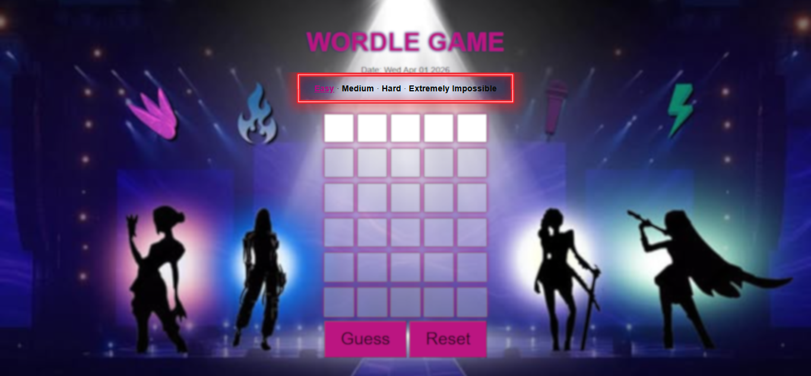
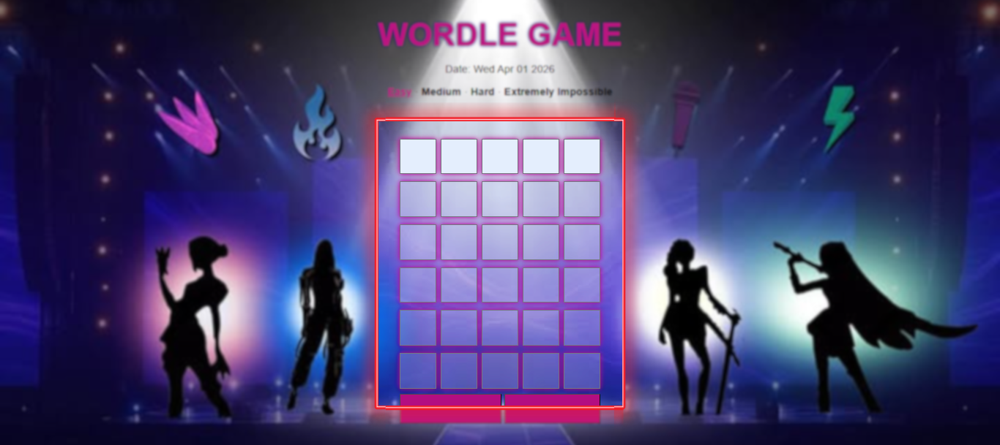
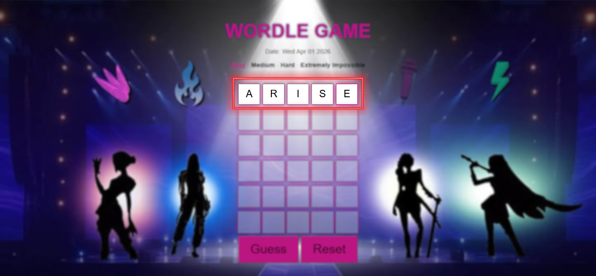
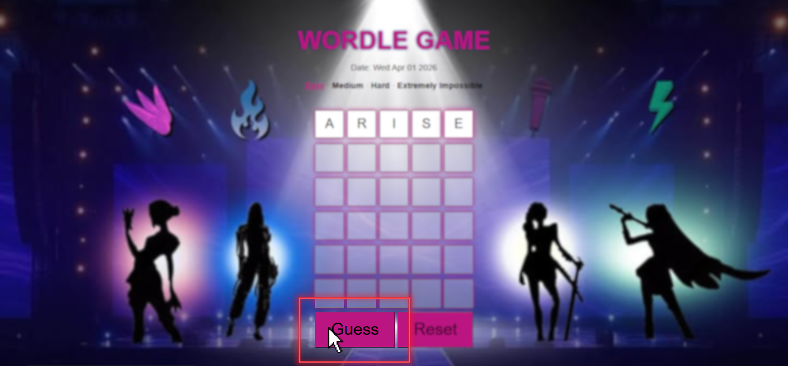
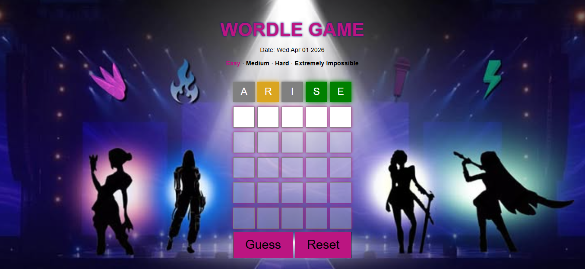
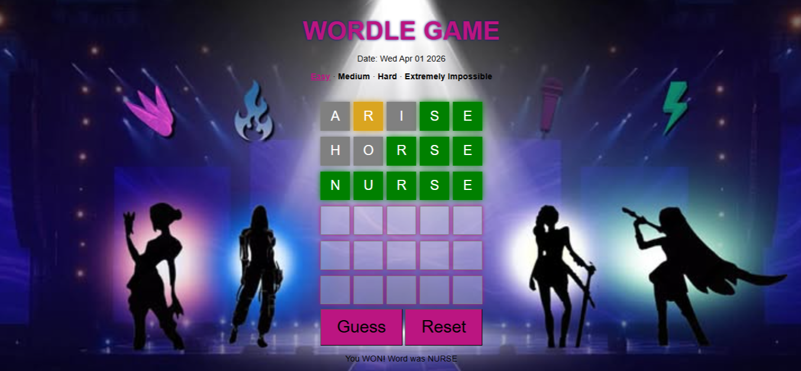

About Wordle
This version of Wordle is not just about guessing a word. It adds more challenges to make the game more exciting and less predictable.
The goal is still simple. You try to guess a hidden 5 letter word. But unlike the original version, this game gives you different difficulty levels and even challenges you with quizzes if you need help.
The game was inspired by the original Wordle, but we added our own twist to make it more fun especially for students. Instead of just guessing, you also need to think fast and answer questions correctly if you want hints.
There are also sounds when you win or lose, which makes the experience feel more real. Every time you play, the word changes so it never feels the same.
This game is designed to test your vocabulary and decision making. You can play it many times and try to improve your guessing skills.
It may look simple at first, but once you try harder modes, it becomes more intense and sometimes even stressful in a fun way.
How to Play
Step 1. Choose a difficulty at the top of the game.

Step 2. Look at the row of empty boxes. This is where you type your guess.

Step 3. Type one letter in each box until you complete a 5 letter word.

Step 4. Click the Guess button or press Enter to submit your word.

Step 5. Check the colors that appear after your guess:
- Green - correct letter in the correct place
- Yellow - correct letter but wrong place
- Gray - letter is not in the word

Step 6. Use the colors to help you guess the next word.
Step 7. Keep going until you find the word or run out of tries.

Some modes may feel harder than others. You might run into something unexpected while playing.
Game Info
This Wordle game features multiple difficulty levels including Easy, Medium, Hard, and Extremely Impossible.
Each mode changes the length of the hidden word and the number of attempts you are given.
As the difficulty increases, the game becomes more challenging and requires better strategy and vocabulary.
The game can be played anytime directly in your browser without the need to download anything.
Challenge yourself by trying different difficulty levels and improving your guessing skills.